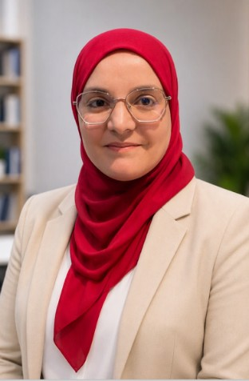
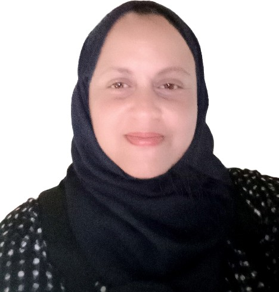

Vendredi 6 novembre 2026
15 h 30 – 17 h 30
Hammamet
Résumé
Comment transformer une idée scientifique ou un résultat de recherche en une innovation à fort potentiel ? Cet atelier interactif propose aux chercheurs et doctorants d’explorer les passerelles entre recherche scientifique et entrepreneuriat innovant.
À travers le Game-Based Learning, les participants seront invités à expérimenter les premières étapes de la démarche entrepreneuriale : identifier un besoin, comprendre son marché, définir une proposition de valeur et apprendre à « vendre son idée scientifique ».
L’atelier abordera également les fondamentaux de la valorisation de la recherche, notamment les niveaux de maturité technologique (TRL), la propriété intellectuelle et les mécanismes de transfert des résultats scientifiques vers des applications concrètes.
Objectif : encourager les chercheurs à dépasser la publication scientifique pour faire de leurs résultats des solutions innovantes, créatrices de valeur et d’impact sociétal.
Intervenantes

Prof. Nesrine Ben Yahia
Intervenante
Dr.-Eng. Nesrine Ben Yahia est maître de conférences en informatique à l’École Nationale des Sciences de l’Informatique (ENSI), Université de la Manouba (UMA), en Tunisie, et chercheuse au laboratoire RIADI. Elle est également membre élue du Conseil de l’Université de la Manouba (2024–2027) et directrice exécutive de l’ENSI Innovation Hub (EIH).
Ses travaux de recherche portent principalement sur l’intelligence artificielle quantique et agentique appliquées dans les domaines de la santé et de l’éducation.
Engagée dans la promotion de l’innovation et de l’entrepreneuriat scientifique, elle accompagne les chercheurs, doctorants et étudiants dans la valorisation de leurs résultats de recherche et le développement de projets innovants.

Dr. Imtiez Fliss
Intervenante
Dr.-Eng. Imtiez Fliss est maître-assistante en informatique à l’École Nationale des Sciences de l’Informatique (ENSI) – Université de la Manouba (UMA), Tunisie – et chercheuse au sein de l’unité de recherche LARIA. Au sein de l’ENSI, elle occupe également les fonctions de directrice du département Systèmes d’Information et Prise de Décision (2024–2027) et de Training Manager de l’ENSI Innovation Hub (EIH).
Ses travaux de recherche s’articulent autour des techniques d’intelligence artificielle (Soft Computing, Machine Learning, Deep Learning, Agentic AI, NLP) appliquées au diagnostic des systèmes complexes (continus, hybrides et à événements discrets) ainsi qu’à l’étude des comportements humains (analyse multimodale des sentiments, détection des infox sur les réseaux sociaux et apprentissage adaptatif via les jeux sérieux).
Retour au programme